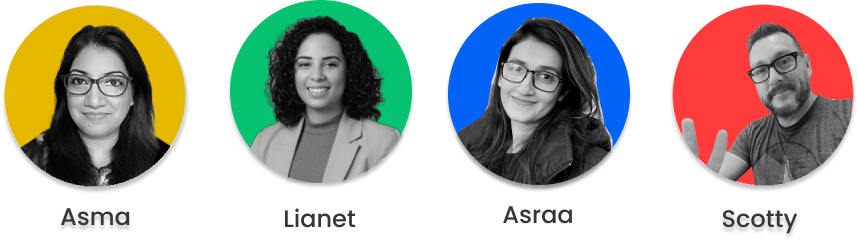

Welcome to my portfolio! In this case study, I'll take you through the journey of transforming Kids Against Hunger Canada's website to create a user-centric and impactful digital experience.

The team UX/UI designers on this project.
Problem Identification
Kids Against Hunger Canada had a noble mission, but their website faced challenges—lack of trust, an outdated design, and information overload. My goal was to enhance transparency, showcase impact, and ultimately increase contributions to combat child hunger.
Problem
We have observed that their website does not exhibit trustworthiness due to a dated design and lack of transparency; this is resulting in donor skepticism and fewer donations.
How might we...
How might we increase contributions by improving transparency in the donation process and demonstrating the reputation and impact of KAHC?
Collaboration with Stakeholders
Collaborating with Shirley and the Kids Against Hunger Canada team, we identified key areas: donation process, diverse giving options, logo consistency, and mission statement representation. This collaboration laid the foundation for a user-focused redesign.
“We want to reduce friction on a donation.”
“One of our challenges is that we don’t lack in volunteers, but the food costs money and we need donors.”
“I think the mission statement is the core message we want to convey through the website.”
The Competition
So, how do non-profit organizations encourage donors to contribute?
Though an analysis of competitors, we narrowed it down to three key elements:
Engaging & Inclusive Design
Financial Transparency and Impactful Storytelling
User-Centric Discovery
Through interviews, surveys, and empathy mapping, I discovered users like Sarah, a detail-oriented project manager. Key findings emphasized user preferences for financial transparency, a simple donation process, and a clean, trustworthy design. Addressing these insights drove the redesign.
Ideation and Branding
Embracing a fresh brand look, I simplified the logo, introduced vibrant colors, and focused on impactful imagery.
Compelling landing pages, live counters, and trust-building visuals were strategically implemented to create an engaging and transparent user experience.
Solution Implementation
Redesigning key pages, enhancing financial transparency, and streamlining the donation process were the core solutions. The result is a friction-free user journey, driving increased contributions. Explore the redesigned website and witness the impactful changes.
Refining and Testing
Real-world feedback through guerrilla testing led to significant changes—revamping the logo, updating the navigation bar, and refining content presentation. Each refinement was guided by user data, ensuring an optimal and well-received design.
To address the challenges, we embarked on a journey involving wireframing, refining and testing, analyzing key findings, A/B testing, and creating a seamless user experience. The process included:
Revamping the logo for better visibility
Enhancing navigation for improved user experience
Implementing a compelling landing page with a live meal counter
Highlighting financial transparency and spending through infographics
Streamlining the donation process into a concise 2-step form
A/B Testing
Iterative A/B testing fine-tuned the design, ensuring it resonated with users. User preferences guided decisions, resulting in a final version that is not just visually appealing but also highly effective.
Desktop Version Walkthrough
Click here to immerse yourself in the final desktop version walkthrough. Experience how research and iterative design merge seamlessly to create an impactful user experience. Navigate through the pages and witness the transformation.
Mobile Version Walkthrough
Click here to immerse yourself in the final mobile version walkthrough. Experience how research and iterative design merge seamlessly to create an impactful user experience. Navigate through the pages and witness the transformation.
Closing Remarks
Thank you for exploring this UX/UI case study. The redesigned Kids Against Hunger Canada website is a testament to our dedication to creating user-friendly, transparent, and impactful digital experiences. Feel free to reach out for more details or collaboration opportunities.
Feedback
"Great use of primary colours for the style guide since it relates to children. I like the use of black and white photos and the simplicity.""
Feedback
"Love the icons you guys used in the donation page, fits the branding so well."
Feedback
"I love the cohesive colour scheme you guys chose. It feels serious, and colourful. Clean and the message is being sent accross."